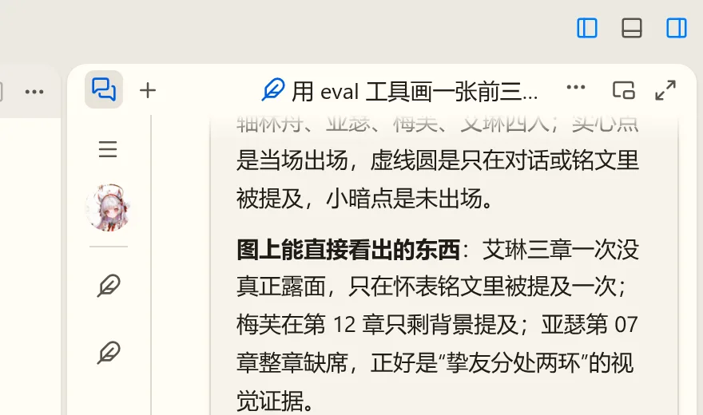
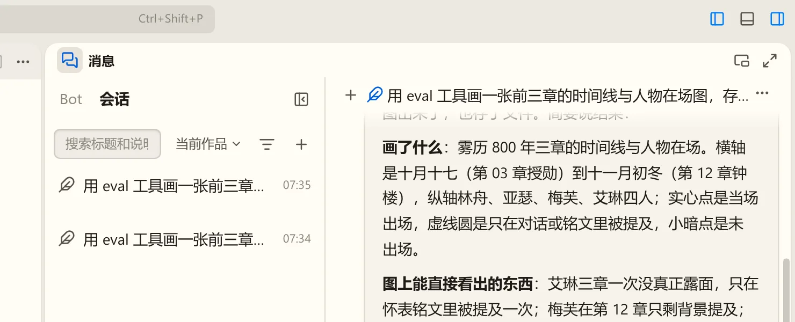

第 3 轮：消息视图停靠时，头和下面两栏怎么接
停靠时，头下面要不要画一条横线，把头和下面的两栏隔开？
推荐 A 头下画线：竖线和气泡边框都收在这条线上，不再像被头切断；宽窄两版一样，只加在消息视图停靠时。
现状


A 头下画线
B 竖线不碰头
已定
- 浮动窗里内置视图可以自绘整个头，停靠不变（2026-11-25）
- 浮动窗的头用 B 自绘头；bot 与会话的切换用 B 标题式（第 1 轮，2026-11-25）
- 框架按钮悬停才显示；键盘用的标题按钮聚焦才显示、在左上角；窄版也自绘（2026-11-25）
- 加载中或出错时照常画面板头、就绪才自绘；窄版标题按钮按 Enter 不开抽屉；加第二个标签时直接换、不过渡（第 2 轮，2026-11-25）